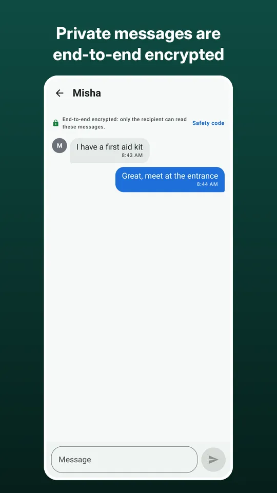

ATTA Aid
Guide de premiers secours et de survie hors ligne, avec SOS et un chat qui fonctionne sans internet, de téléphone à téléphone.
Bientôt sur Google PlayDevenir testeurLe test fermé sur Google Play commence. Rejoignez le groupe des testeurs et nous vous enverrons le lien du test.
Ce qu’il contient
- Premiers secours et survie hors ligneGuides pas à pas fondés sur des sources officielles publiques (Ready.gov, FEMA, CDC). Fonctionne sans connexion.
- Numéros d’urgence par paysLes bons numéros là où vous êtes, appel en un geste.
- SOS aux personnes à proximitéEnvoyez un SOS — avec votre position si vous le souhaitez — et choisissez qui le reçoit : tout le monde à proximité, votre groupe ou une personne.
- Chat à proximité sans internetLes téléphones se connectent en Bluetooth et Wi-Fi et se relaient les messages. Sans SIM, sans réseau, sans matériel supplémentaire.
- Messages privés chiffrés de bout en boutSeul le destinataire peut lire vos messages directs. Comparez un code de sécurité en personne.
- Groupes chiffrés par QRPour les enseignants et les familles : créez un groupe, les autres le rejoignent en scannant un code QR.
- 6 languesEnglish, Русский, עברית, Español, Deutsch, Français.
- Sans publicité, sans paiement, sans compteGratuit. Rien à acheter, aucune inscription. Vos données restent sur votre téléphone.
Captures d’écran




Avertissement médical
ATTA Aid est un guide éducatif, pas un dispositif médical. Elle ne pose pas de diagnostic, ne soigne pas et ne remplace ni les services d’urgence ni l’aide médicale professionnelle. En cas d’urgence, appelez d’abord votre numéro d’urgence local (par exemple 112, 911 ou 101 en Israël). ATTA Aid n’est ni affiliée à Ready.gov, FEMA, CDC ou toute autre organisation citée, ni approuvée par elles.
Confidentialité et contact
Politique de confidentialité Supprimer vos données Contact: gamerazrabplay@gmail.com